Press kit
Cozy Necromancy
A gentle mystery about a village that cannot let go of its dead. No combat, no timers, no fail states.
- Steam · late October 2026
- US$9.99
- Free demo out now
- Windows · macOS · Linux
- Single player
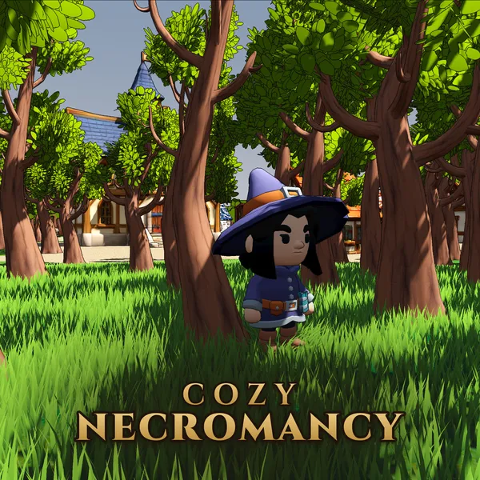
- Developer
- Nathaniel Voorhies, working as Hexmonger (solo developer)
- Publisher
- Hexmonger (self-published)
- Release
- Late October 2026 on Steam
Free demo on Steam now: the opening and Luna’s story - Price
- US$9.99
- Platforms
- Windows, macOS and Linux (Steam)
iOS and Android later - Genre
- Cozy mystery RPG, with no combat
- Players
- Single player
- Input
- Controller, or keyboard and mouse
- Languages
- English (text; there is no voice acting)
- Engine
- Godot 4.6
- Steam
- store.steampowered.com/app/5349910
- Website
- hexmonger.com/cozy-necromancy
- Press contact
- press@hexmonger.com
About the game
In one sentence
Cozy Necromancy is a cozy 3D mystery RPG with no combat, in which a journeyman necromancer lays a village’s restless dead to rest by listening to them, finding out what holds them, and making the case with three objects in a ritual circle.
Short description (about 50 words)
A gentle mystery about a village that cannot let go of its dead. As a journeyman necromancer, you lay six spirits to rest by listening to them, investigating what holds them, and making your case with three objects in a ritual circle. No combat, no timers, no fail states.
Long description
You are a journeyman necromancer, freshly graduated and posted to Willowmere on your first assignment. The spirit waypoint beneath the village, the Moonwell, was sealed thirty-five years ago, and the dead have been collecting behind it ever since. None of them are hostile. All of them are stuck.
There is no combat in this game. You cannot fight a ghost into peace.
Every bound spirit is a person with an unfinished sentence: a twin who blames herself for a fire, a knight who kept the wrong oath, a hedge witch the village burned and later thanked. You travel with them, watch what they react to, read the archive someone misfiled, and ask the living about the things they would rather not say.
When you think you know what binds a spirit, you say it with objects: three items placed in the ritual circle. What matters is what they mean. A locket, a scorched hinge, a letter never sent. Get it right and they can move on. Get it half right and they will tell you so. Nothing is ever consumed, so you can always try again.
Six companion stories, each resolvable on its own, and one older question under all of them: who sealed the Moonwell, and what were they protecting?
Features
- No combat. A haunting gets solved once you understand it.
- Six spirits, six stories. A ghost twin, a silent knight, a burned hedge witch, a 212-year-old golem, a vampire missing sixty years of memory, and an assassin who cannot picture the faces.
- The ritual is an argument. Three symbolic items, four possible outcomes, and nothing lost for being wrong.
- A village that talks. Villagers with their own gossip and their own reasons to keep a secret, and a square full of neighbors running errands and talking among themselves.
- Quiet by design. No timers, no fail states, no resource management. Optional packing puzzles, hints, and a journal that remembers what you have worked out.
- Offline, no account. No ads and no microtransactions on Steam. Steam achievements, and nothing collected about the player.
Trailer
94 seconds, filmed from the running game, with the game’s own music. Watch it on YouTube to embed or share it. For the 1080p master, email press@hexmonger.com.
Screenshots
1920×1080 PNG, captured from the running game, and the same six pictures as the Steam page. No watermarks or logos: crop them freely.

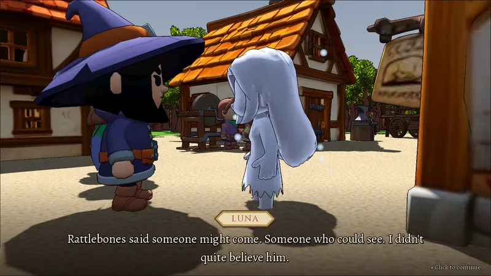

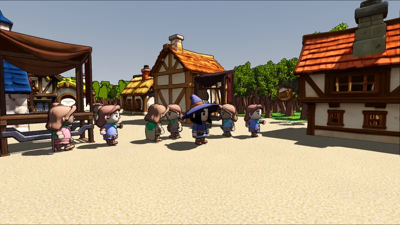

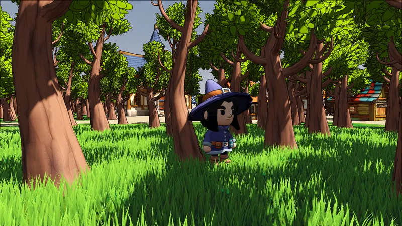

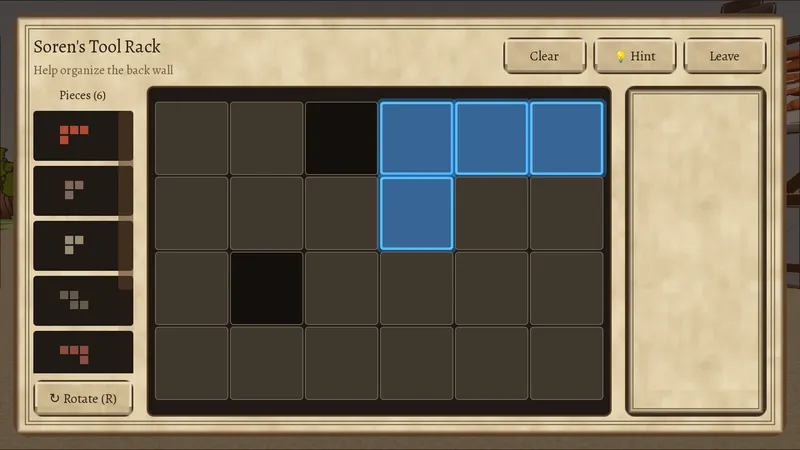

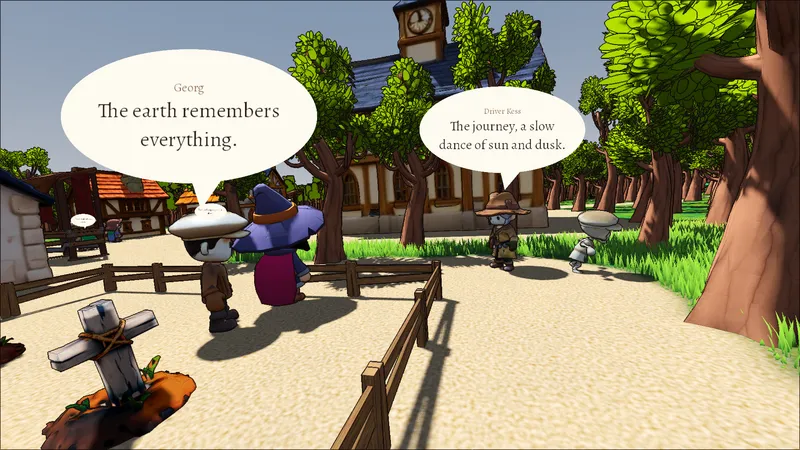

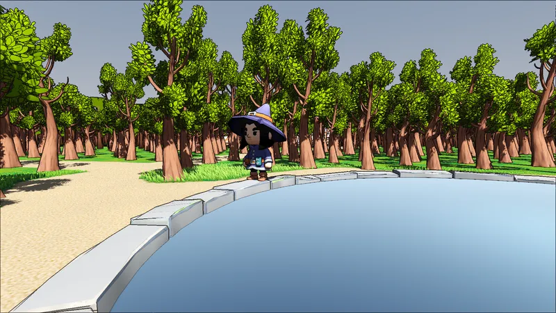
4K stills
The same places captured at 3840×2160, as JPEG.

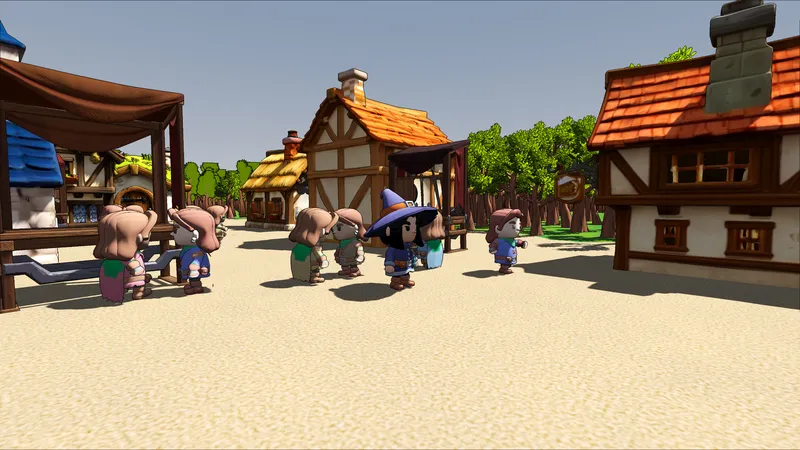

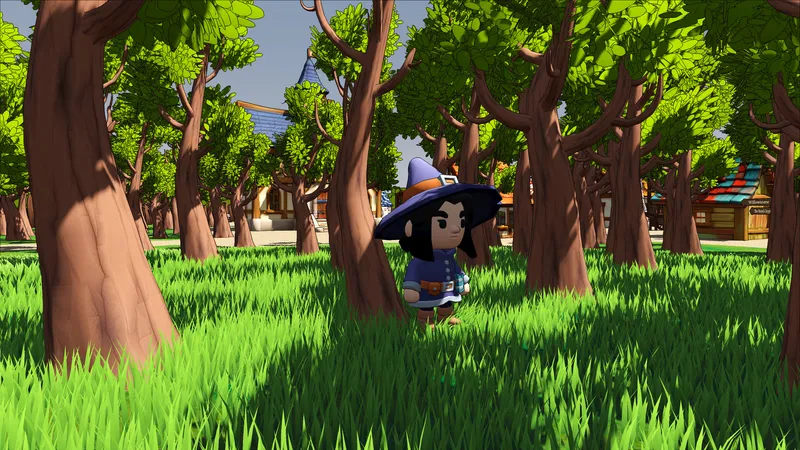

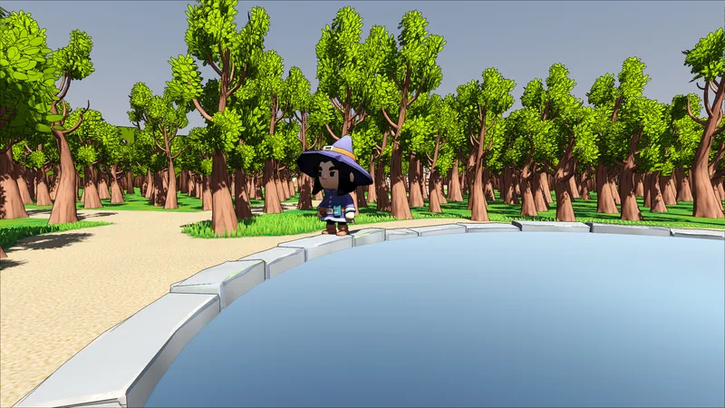

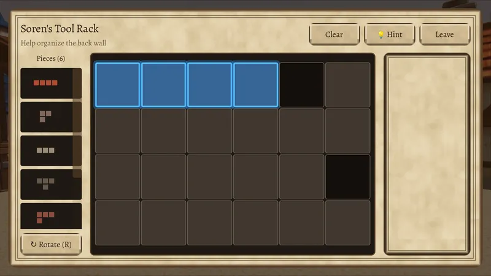
Logo, icon and key art
The logos are transparent PNG, set in Cinzel. The key art and the Steam capsules are frames from the game with the logo laid on them; the large ones are JPEG at quality 95. The icon is the game’s icon on Steam, and its art is AI-generated.


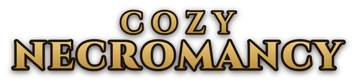

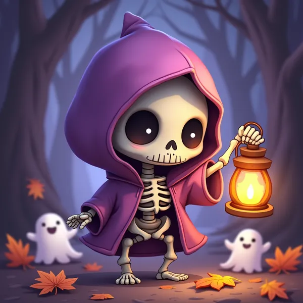

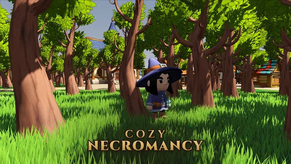


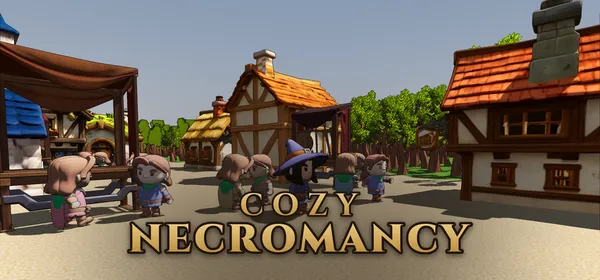

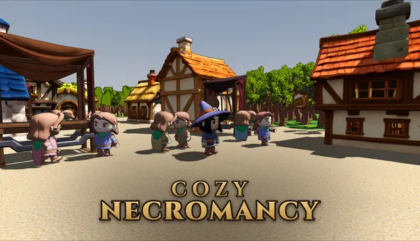

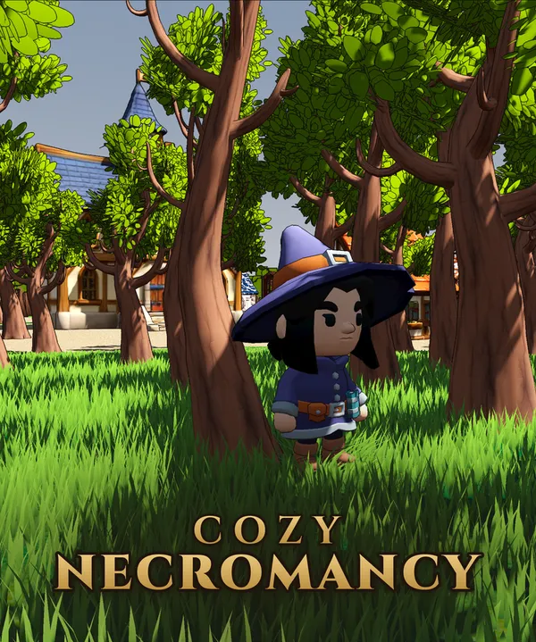

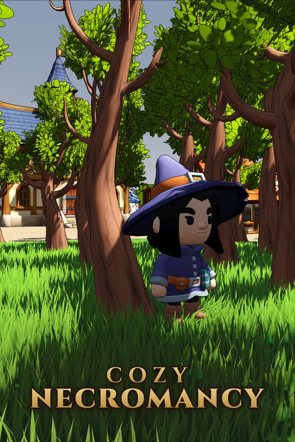

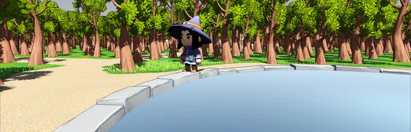
Generative AI, stated plainly
Made with AI tools: the key art behind the game’s icon, and the first versions of many 3D models (the villagers and spirits, the ritual items and several buildings). Each model was generated from our own written description, then cleaned up, re-shaded, rigged and animated by hand. The achievement icons are pictures of those models.
Written by a person: the story, quests and dialogue. AI tools helped edit them. None of the game’s writing, music or sound was generated: the music and sound effects come from human-made libraries.
Generated while you play: a small language model (Google’s Gemma 3 270M) runs entirely on the player’s own machine, with no network connection. It writes short lines of villager small talk, the oracle’s one- or two-sentence hint after a failed ritual, and routine filler records in the in-game archive. It also picks which of the pre-written dialogue lines fits the moment. The player never types to it. It never writes story. It can be switched off in Settings, and the game plays the same on written lines alone.
Keys, streaming and video
The demo is free on Steam now: the opening and Luna’s story, from Cozy Necromancy’s Steam page.
Steam keys for the full game go to press, streamers and video creators. Email press@hexmonger.com with a link to your outlet or channel.
Streaming and monetization: you are welcome to stream, record and monetize video of Cozy Necromancy on any platform, and you do not need to ask first. Screenshots and art from this kit may be used in coverage of the game. We’d appreciate a link to the Steam page.
Credits
- Design, programming and writing: Nathaniel Voorhies
- 3D assets: KayKit by Kay Lousberg (CC0), Quaternius (CC0), and models generated with MeshForge and Meshy, then reworked by hand
- Music: Ovani Sound
- Sound effects: Ovani Sound, the Sonniss GDC Game Audio Bundles, and Kenney (CC0)
- Fonts: Cinzel by Natanael Gama (the logotype), Alegreya by Huerta Tipográfica
- On-device language model: Gemma 3 270M, by Google, run with llama.cpp
- Engine: Godot 4
About Hexmonger
Hexmonger is the independent game studio of Nathaniel Voorhies, who worked on GPU architecture at NVIDIA and on machine-learning accelerators and their compilers at Google before turning to games. It makes small games with deep systems underneath: sand that behaves like sand, cities that generate themselves, and stories that ask you to understand rather than fight.
- Founder
- Nathaniel Voorhies, solo developer (design, programming, writing and music)
- Business
- Sole proprietorship: Nathaniel Voorhies, doing business as Hexmonger
- Based in
- San Mateo County, California, USA
- Games
- Castles in the Sand, a cozy beach-building game with real water, out now on iPhone and iPad
Cozy Necromancy, coming to Steam in late October 2026
Tin Coffins, a cel-shaded mech roguelite shooter, coming to Steam in December 2026
Goblin Hunt, a pen-and-ink fantasy RPG, in development - Principles
- No accounts. Ads never interrupt play and can always be declined. Every privacy policy is published and versioned in the open.
Cozy Necromancy went into production in January 2026, as a mystery about helping a village’s restless dead move on by listening rather than fighting. Its villagers’ small talk comes from a language model small enough to run on the player’s own machine, while every line of the story is written by hand. Its free demo, the opening and Luna’s story, came to Steam in October 2026.
Contact
Talk to the developer
Interviews, keys, questions, or a picture you can’t find here: email Nathaniel directly. There is no form.